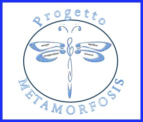
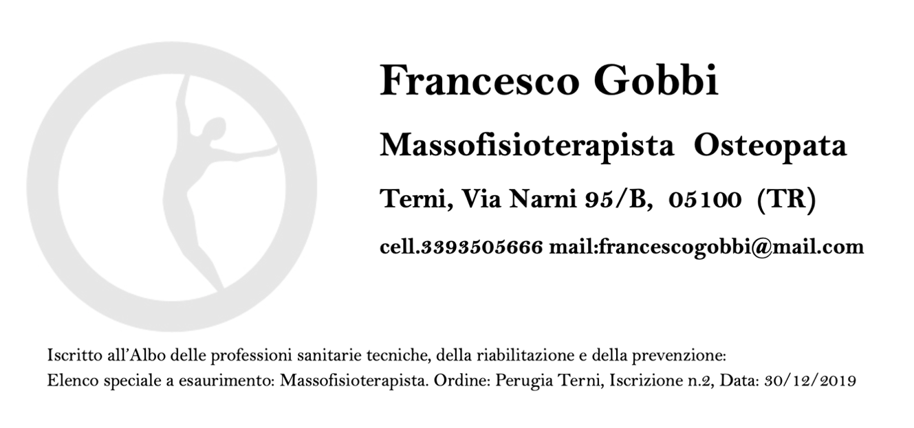

Collaborano con noi

Dr.ssa Daniela Rossini
Fisioterapista – Operatrice olistica
mail: tefuacar@gmail.com
cell. 334 3422558
sito: www.my-metamorfosis.com

Dr. Francesco Gobbi
Massofisioterapista – Osteopatia
Tel. 339 3505666
Sede: Via Narni 95/B, 05100 Terni
IOMIDIFENDO
L’accademia “Io Mi Difendo Sistema” ideata dal maestro Ribello, ha come scopo la volontà di insegnare un sistema di AUTODIFESA LEGALE AL CAPSICUM che sia in grado di tutelare le persone sia dal punto di vista dell’incolumità fisica che dal lato delle possibili ripercussioni legali. Il maestro Ribello, nel dare vita al sistema di DIFESA PERSONALE ANTI-AGGRESSIONE e al suo programma di addestramento, ha individuato nelle PISTOLE AL CAPSICUM (“pistole legali al peperoncino”) gli strumenti ideali per L’AUTODIFESA SENZA PORTO D’ARMI. Si tratta infatti di dispositivi dotati di una capsula riempita con un gel ad alto potere urticante. Questo Corso di Difesa Personale va ben oltre lo Spray al Peperoncino: infatti imparerete a maneggiare un dispositivo in grado di bloccare un qualsiasi aggressore in brevissimo tempo, senza procurare danni permanenti e, cosa più importante, assolutamente legale e non letale.
Il maestro Luca Primavera è tecnico formatore della IO MI DIFENDO. Per informazioni e partecipazione ai corsi non esitate a contattarci ai nostri recapiti.
Per ulteriori informazioni: www.iomidifendo.it
Sponsorizzazioni
Sei interessato a sponsorizzarci? Scarica la brochure e scopri i piani di sponsorizzazione possibili.
Proposta di sponsorizzazione (PDF)